Recommendation for place to visit Japan
Taiga's favorite
The park near my house in Miyagi prefecture.This is taken in Spring, and cherry blossams were blooming!
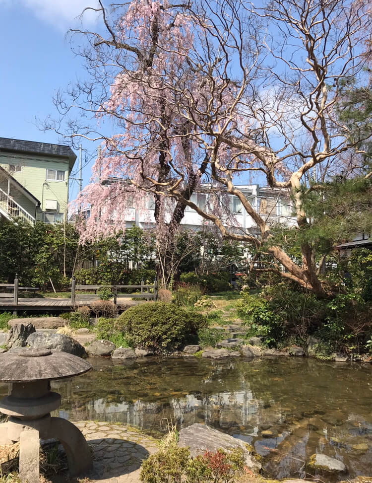
Ami's favorite
When you come to Japan, please go to Tokyo Skytree. You can see the whole Tokyo from
this tower. And you can enjoy shopping.
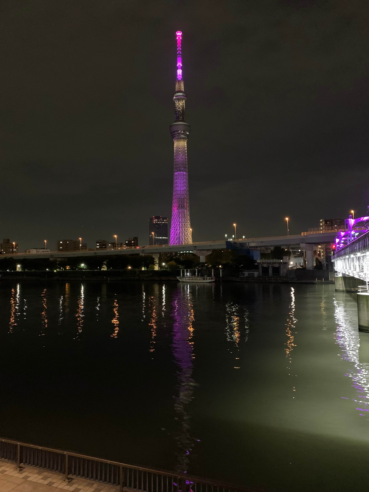
This photo was taken at the Sumida Aquarium next to Skytree. You will be healed by cute
creatures especially penguin.
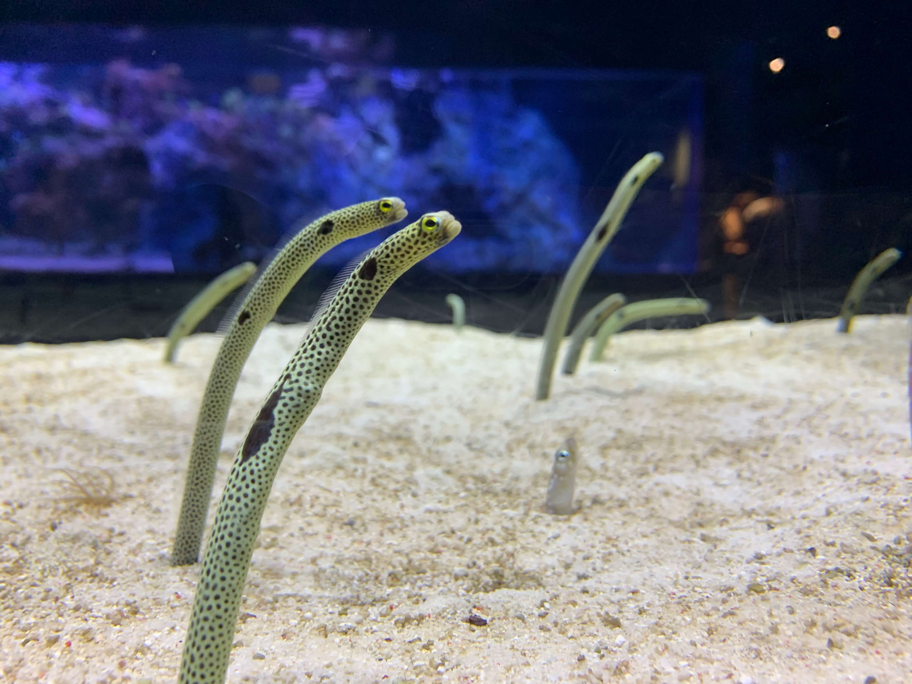
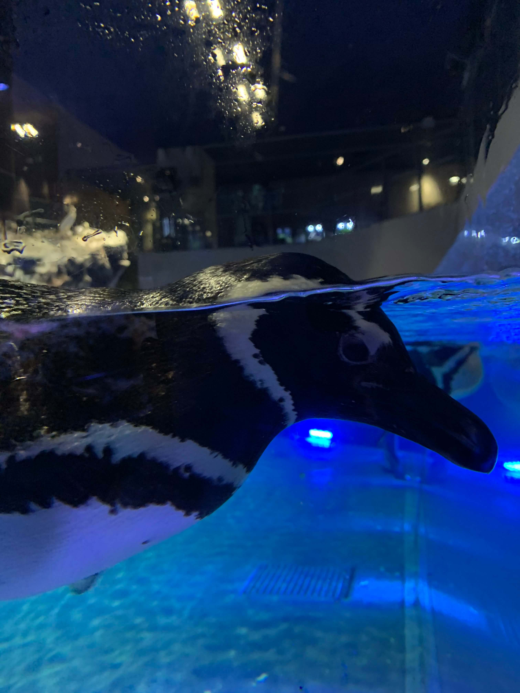
Naoki's favorite
The place I hardly recommend to visit in Japan is Minatomirai. It’s in little south and an hour by train from Tokyo. There is many touring spots, such as Yokohama Red Brick Warehouse and Nippon Maru Memorial Park. Also Minatomirai is known as beautiful night views. Tell me when you visit Japan. I would love to tour Minatomirai!!
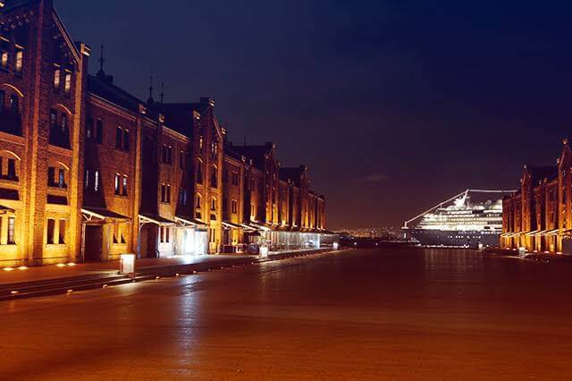
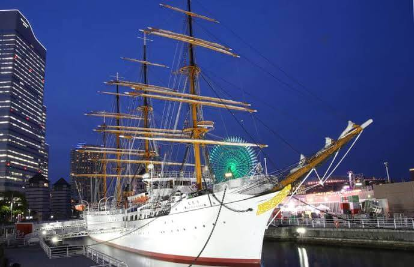
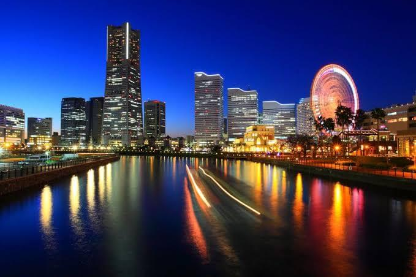
Kota's favorite
I want to introduce you my hometown, Chiba prefecture. There is Tokyo Disney
Land in Chiba and it is so great, but I want to introduce other spots you probably
don’t know. I will tell you Sahara, the east part of Chiba. There are still some old
streets and houses in Edo era, so you can fell the history in Japan!
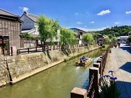
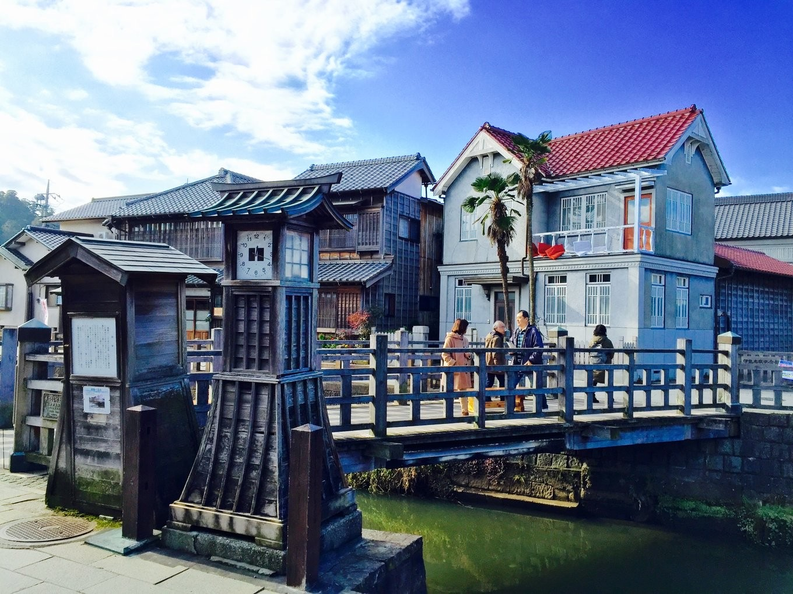
Rina's favorite
I recommend you to visit Ehime Prefecture when you visit Japan. It is my favorite place. It has
both plenty of nature environment and sophisticated sightseeing spots.
You’ll be able to be relaxed and have fun!
breakfast I ate on the sightseeing train
: It contains local farm products. It is good (^.^)
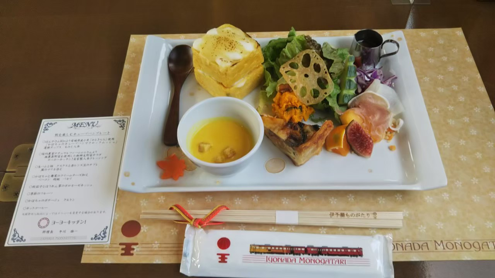
A tap where mikan juice come
: Mikan is a local specialty of Ehime.
The one who has a cup is me.
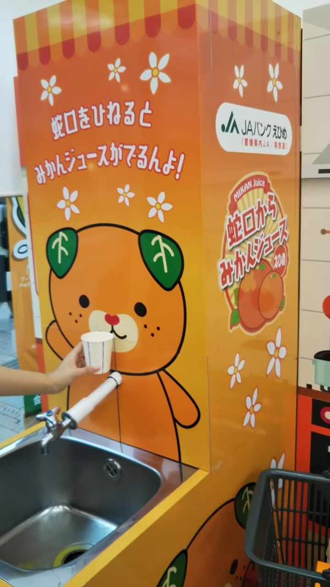
A famous hot spring, Dogo Onsen
: You can also enjoy walking around refined spa town, wearing yukata,
Japanese traditional clothes.
It was so comfortable in the bathtub here, so I missed the last train to my
hotel( ́-ω-`)

Yuki's favorite
THis is Ashiya River. This is the most famous river in the town where I live now. Different seaosns have different attractions.
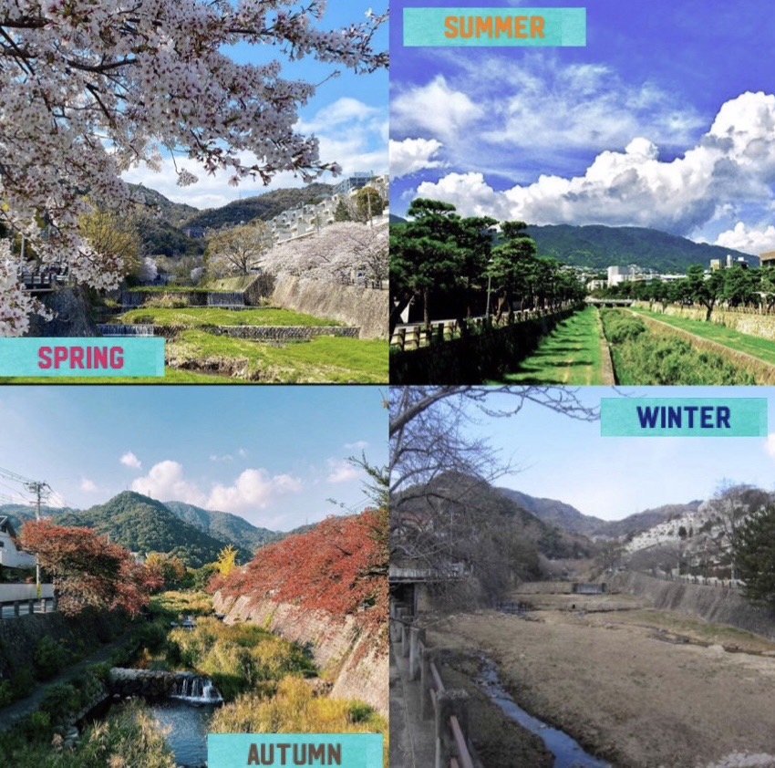